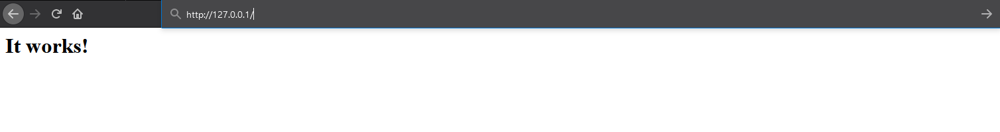
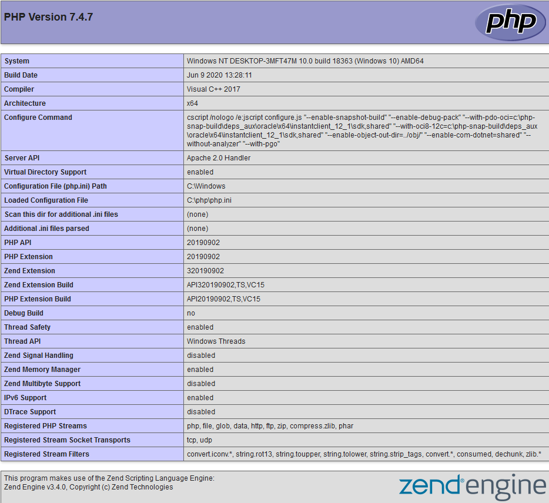

1) Скачиваем необходимые файлы
1) PHP windows.php.net/download/ (Обязательно Thread Safe)
2) Apache www.apachelounge.com/download/httpd-2.4.43-win64-VS16.zip
2) Запускаем сервер Apache
1) Распаковываем Apache в папку Apache24 на диске C.
2) Запускаем его как службу в Windows. Для этого переходит в директорию bin, папки Apache-а, там запускаем cmd от имени администратора и выполняем команду httpd.exe -k install
3) Если все прошло нормально, то по адресу 127.0.0.1 должна появиться страничка, на которой написано "It works!"
3) Соединяем PHP и Apache
1) Переходим в C:\Apache24\conf\httpd.conf. и в конец файла прописываем:
AddHandler application/x-httpd-php .php
AddType application/x-httpd-php .php .html
LoadModule php7_module "путь к папке php php7apache2_4.dll"
PHPIniDir "путь к папке php"
2) В папке C:\Apache24\htdocs\ создаем файл phpinfo.php со следующим содержимым:
< ?php
phpinfo();>
3) После этого по адресу 127.0.0.1/phpinfo.php должна появиться Web-страничка со сведениями о сборке PHP
